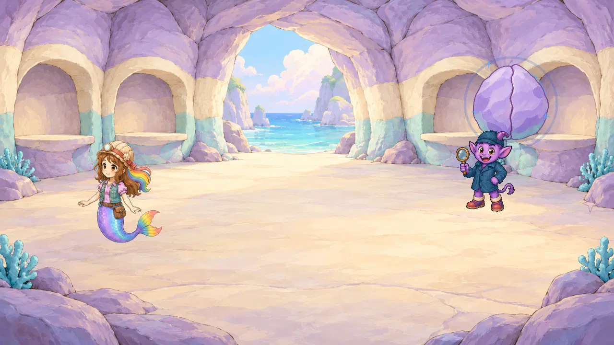
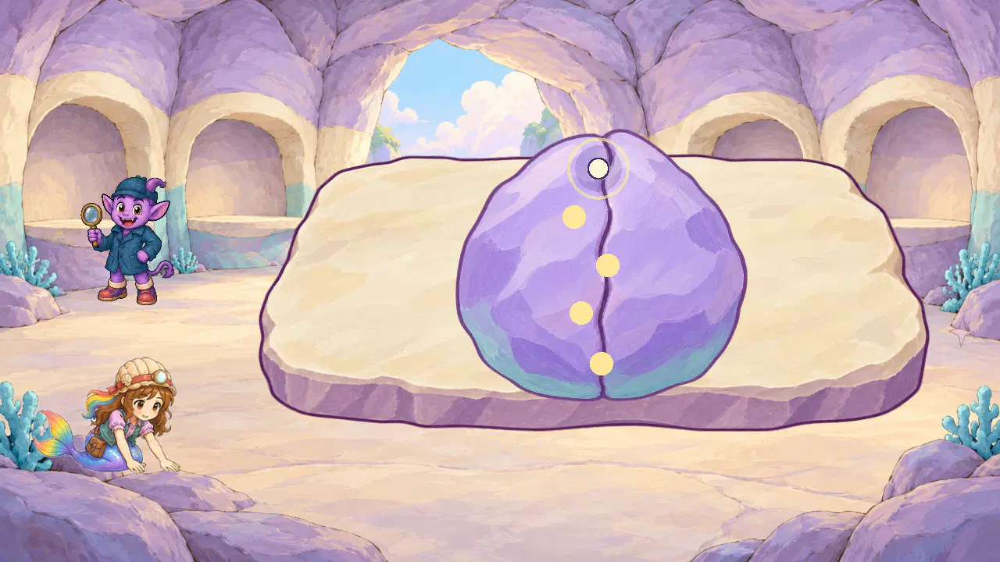
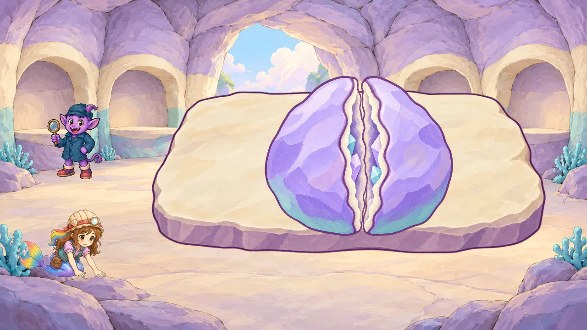
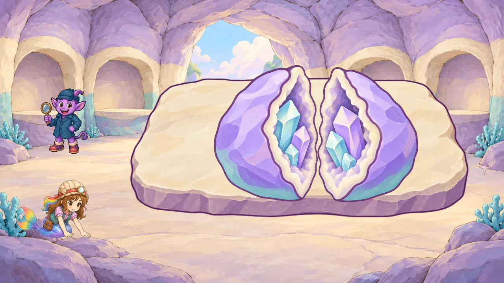
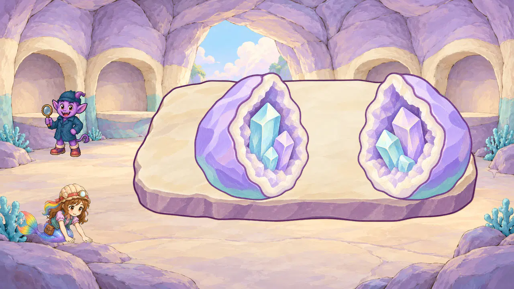
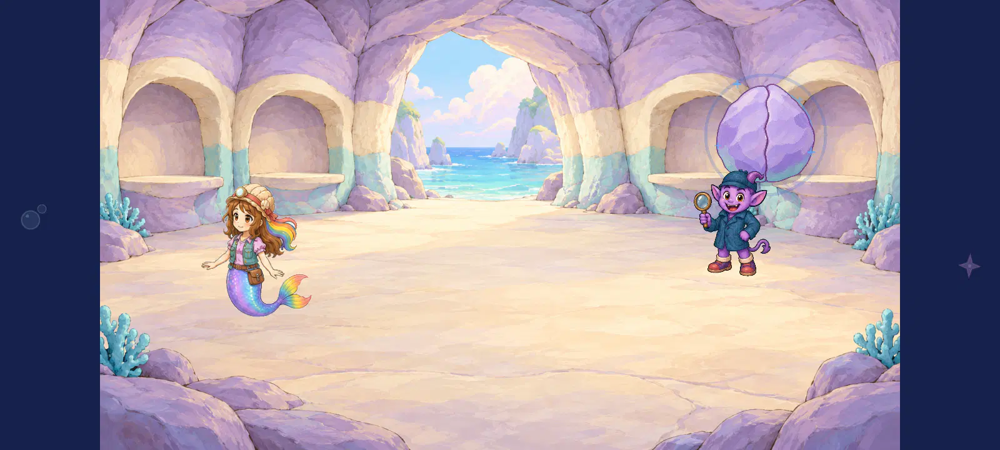
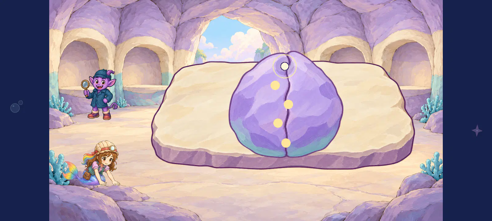
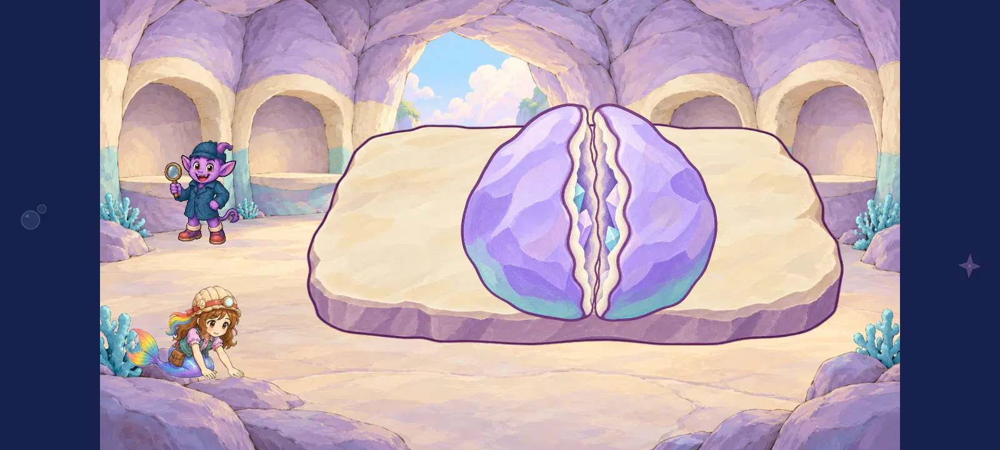
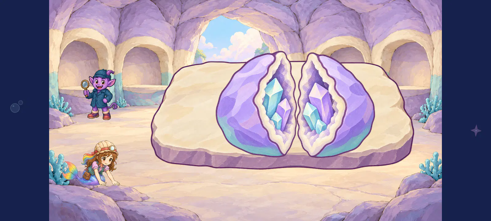
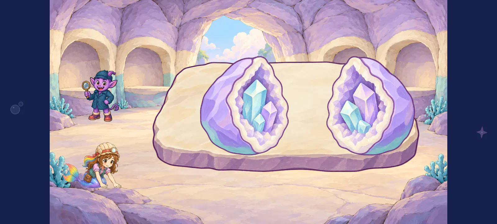

Geode gradual opening — every10 corrected native view
Current endpoint placement — shared base
Every10 updated view inspected;312 total selected teacher/geology/pan comparisons. Full endpoint centreY+15 fixes the measured base rise. Base/static progression4.5 provisional and embedded material4.6; invitation3.8/remote actor2.7 remain priorities.

All10 current native views and written evaluations
Closed → narrow crack → partial concave interiors → opened rooted crystals. Source4.6; selected static progression4.5 provisional. Invitation hierarchy3.8, endpoint base continuity4.2 and remote actor contact2.7 remain priorities. All302 teacher/geology/pan native comparisons directly inspected. The under-resolution room remains reference-only; no full action/route/device/child/owner approval.
Individual scores/hashes · Corrected machine receipt · Preserved failed first run · All source images
geologist_1280_geode_invitation_painted_staging

The isolated closed material reads well4.6, but its large floating invitation overlaps the partner hat and lacks a supporting display role. Invitation hierarchy3.8 remains a placement priority; no opening art is present here.
geode material finish 4.6/5; static object readability 4.5/5; invitation hierarchy 3.8/5; scene coherence 4.3/5
Corrected attempt02 only; all10 selected native views directly inspected at1280/1600 using inherited seam taps and25/40/55px pull segments. Failed first capture remains failed and is excluded from reviewed-view counts. No naturally timed ordinary complete route, articulated geode hand action, device/child/owner/final report acceptance.geologist_1280_geode_opened_task_painted_staging

Closed source has no visible interior to score. Plum seam and broad matte paint remain4.6, with legible touch spots. The unchanged actor still works from the floor away from the geode2.7. Remote actor contact2.7 and reference-only under-resolution room remain open.
geode material finish 4.6/5; static object readability 4.5/5; selected state progression 4.5/5; actor work contact 2.7/5; scene coherence 4.3/5
Corrected attempt02 only; all10 selected native views directly inspected at1280/1600 using inherited seam taps and25/40/55px pull segments. Failed first capture remains failed and is excluded from reviewed-view counts. No naturally timed ordinary complete route, articulated geode hand action, device/child/owner/final report acceptance.geologist_1280_geode_early_crack_rooted_glimpse_painted_staging

First crack: only a narrow rooted cyan/lilac glimpse is exposed, with most cavities truthfully occluded. Compact outer shell/cream lip stay readable4.6. Selected static progression4.5 provisional avoids the previous immediate fully faced reveal. Remote actor contact2.7 and reference-only under-resolution room remain open.
geode material finish 4.6/5; visible embedded interior 4.6/5; static object readability 4.5/5; selected state progression 4.5/5; actor work contact 2.7/5; scene coherence 4.3/5
Corrected attempt02 only; all10 selected native views directly inspected at1280/1600 using inherited seam taps and25/40/55px pull segments. Failed first capture remains failed and is excluded from reviewed-view counts. No naturally timed ordinary complete route, articulated geode hand action, device/child/owner/final report acceptance.geologist_1280_geode_partial_open_crystal_contact_painted_staging

Middle opening: oblique cavities and six rooted crystals are visible, with thick solid outer sides still present. Material and embedded semantics4.6, selected static progression4.5 provisional. No detached crystal/reward drawing. Remote actor contact2.7 and reference-only under-resolution room remain open.
geode material finish 4.6/5; visible embedded interior 4.6/5; static object readability 4.5/5; selected state progression 4.5/5; actor work contact 2.7/5; scene coherence 4.3/5
Corrected attempt02 only; all10 selected native views directly inspected at1280/1600 using inherited seam taps and25/40/55px pull segments. Failed first capture remains failed and is excluded from reviewed-view counts. No naturally timed ordinary complete route, articulated geode hand action, device/child/owner/final report acceptance.geologist_1280_geode_fully_open_embedded_interior_painted_staging

Fully open: the preserved endpoint has three rooted crystals in each cream-rimmed cavity4.6. Halves spread inside the slab; object readability4.5 provisional. Endpoint halves are320h versus350h intermediates, raising the visible base15px: base continuity4.2 remains a measured placement priority; no accepted whole action. Remote actor contact2.7 and reference-only under-resolution room remain open.
geode material finish 4.6/5; visible embedded interior 4.6/5; static object readability 4.5/5; selected state progression 4.5/5; endpoint base continuity 4.2/5; actor work contact 2.7/5; scene coherence 4.3/5
Corrected attempt02 only; all10 selected native views directly inspected at1280/1600 using inherited seam taps and25/40/55px pull segments. Failed first capture remains failed and is excluded from reviewed-view counts. No naturally timed ordinary complete route, articulated geode hand action, device/child/owner/final report acceptance.geologist_1600_geode_invitation_painted_staging

The isolated closed material reads well4.6, but its large floating invitation overlaps the partner hat and lacks a supporting display role. Invitation hierarchy3.8 remains a placement priority; no opening art is present here.
geode material finish 4.6/5; static object readability 4.5/5; invitation hierarchy 3.8/5; scene coherence 4.3/5
Corrected attempt02 only; all10 selected native views directly inspected at1280/1600 using inherited seam taps and25/40/55px pull segments. Failed first capture remains failed and is excluded from reviewed-view counts. No naturally timed ordinary complete route, articulated geode hand action, device/child/owner/final report acceptance.geologist_1600_geode_opened_task_painted_staging

Closed source has no visible interior to score. Plum seam and broad matte paint remain4.6, with legible touch spots. The unchanged actor still works from the floor away from the geode2.7. Remote actor contact2.7 and reference-only under-resolution room remain open.
geode material finish 4.6/5; static object readability 4.5/5; selected state progression 4.5/5; actor work contact 2.7/5; scene coherence 4.3/5
Corrected attempt02 only; all10 selected native views directly inspected at1280/1600 using inherited seam taps and25/40/55px pull segments. Failed first capture remains failed and is excluded from reviewed-view counts. No naturally timed ordinary complete route, articulated geode hand action, device/child/owner/final report acceptance.geologist_1600_geode_early_crack_rooted_glimpse_painted_staging

First crack: only a narrow rooted cyan/lilac glimpse is exposed, with most cavities truthfully occluded. Compact outer shell/cream lip stay readable4.6. Selected static progression4.5 provisional avoids the previous immediate fully faced reveal. Remote actor contact2.7 and reference-only under-resolution room remain open.
geode material finish 4.6/5; visible embedded interior 4.6/5; static object readability 4.5/5; selected state progression 4.5/5; actor work contact 2.7/5; scene coherence 4.3/5
Corrected attempt02 only; all10 selected native views directly inspected at1280/1600 using inherited seam taps and25/40/55px pull segments. Failed first capture remains failed and is excluded from reviewed-view counts. No naturally timed ordinary complete route, articulated geode hand action, device/child/owner/final report acceptance.geologist_1600_geode_partial_open_crystal_contact_painted_staging

Middle opening: oblique cavities and six rooted crystals are visible, with thick solid outer sides still present. Material and embedded semantics4.6, selected static progression4.5 provisional. No detached crystal/reward drawing. Remote actor contact2.7 and reference-only under-resolution room remain open.
geode material finish 4.6/5; visible embedded interior 4.6/5; static object readability 4.5/5; selected state progression 4.5/5; actor work contact 2.7/5; scene coherence 4.3/5
Corrected attempt02 only; all10 selected native views directly inspected at1280/1600 using inherited seam taps and25/40/55px pull segments. Failed first capture remains failed and is excluded from reviewed-view counts. No naturally timed ordinary complete route, articulated geode hand action, device/child/owner/final report acceptance.geologist_1600_geode_fully_open_embedded_interior_painted_staging

Fully open: the preserved endpoint has three rooted crystals in each cream-rimmed cavity4.6. Halves spread inside the slab; object readability4.5 provisional. Endpoint halves are320h versus350h intermediates, raising the visible base15px: base continuity4.2 remains a measured placement priority; no accepted whole action. Remote actor contact2.7 and reference-only under-resolution room remain open.
geode material finish 4.6/5; visible embedded interior 4.6/5; static object readability 4.5/5; selected state progression 4.5/5; endpoint base continuity 4.2/5; actor work contact 2.7/5; scene coherence 4.3/5
Corrected attempt02 only; all10 selected native views directly inspected at1280/1600 using inherited seam taps and25/40/55px pull segments. Failed first capture remains failed and is excluded from reviewed-view counts. No naturally timed ordinary complete route, articulated geode hand action, device/child/owner/final report acceptance.